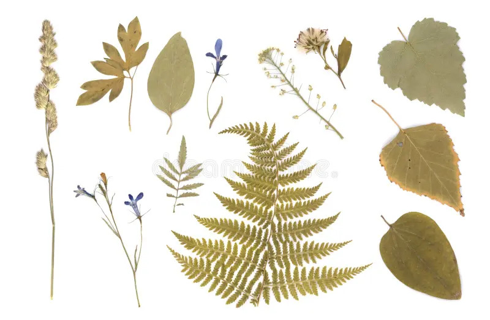

An introduction to identifying and cataloging plant specimens for herbariums.
What is a Herbarium?
A herbarium is a collection of preserved plant specimens and associated data used for scientific study. Specimens may be whole plants or plant parts; these will usually be in a dried form mounted on a sheet, but they may also be kept in alcohol or other preservative.

A dried plant specimen mounted on a herbarium sheet.
How to Identify a Specimen
When identifying a plant for a herbarium, several characteristics must be closely observed:
Leaf shape and arrangement
Flower structure and color
Fruit or seed appearance
Stem type and branching
Steps to Prepare Herbarium Specimens
Proper preservation and documentation are crucial in creating a high-quality herbarium specimen. Below are the common steps followed:
Basic Steps
Collection
Collect the plant carefully, ensuring you have all essential parts like leaves, stems, flowers, or seeds.
Pressing
Place the specimen between sheets of paper and press it flat using a plant press or heavy books.
Drying
Leave the pressed specimen in a dry area until it is completely dehydrated.
Mounting
Mount the dried plant on a herbarium sheet using glue or tape, making sure to label it correctly.